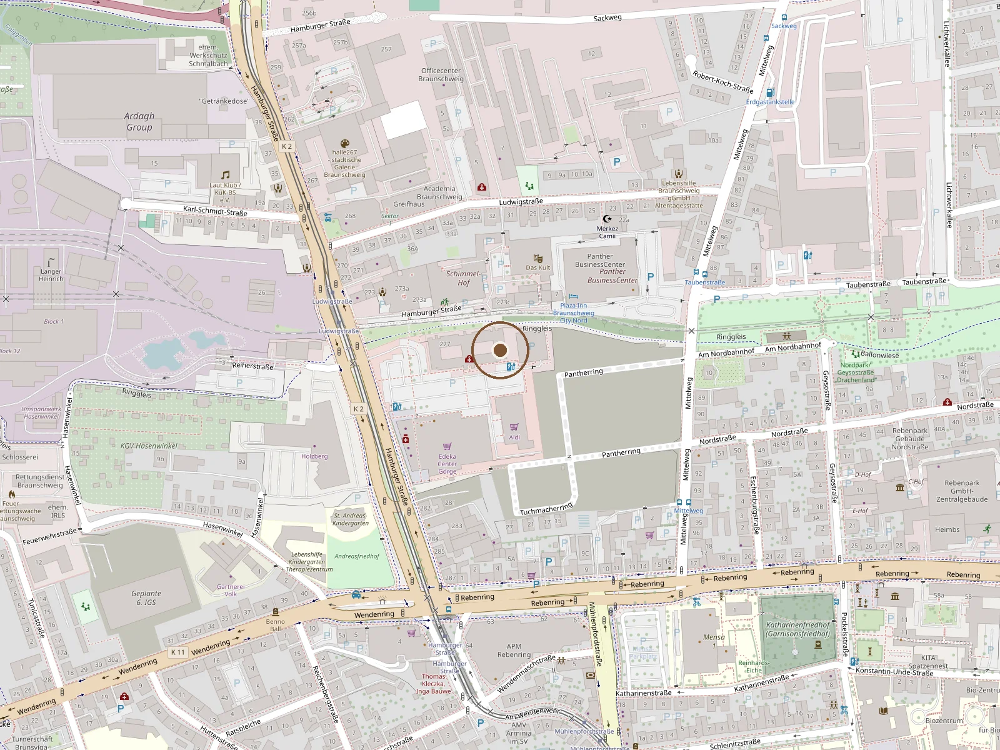

- Praxis
- Privatpraxis Dr. med. Günter Pfeiler
Hamburger Straße 277
38114 Braunschweig - Termine
- Nach Vereinbarung
- praxis@dr-pfeiler.de
Für Terminanfragen bitte anrufen. Keine Befunde per E-Mail.
Anfahrt
So finden Sie hin.

Erst mit diesem Klick werden Ihre IP-Adresse und Browserdaten an Google übermittelt und Google kann Cookies setzen. Mehr in der Datenschutzerklärung.
- Mit dem Auto
- Im ehemaligen Verlagshaus der Braunschweiger Zeitung. Parkhaus direkt am Haus, Einfahrt Hamburger Straße 277. Von der A 391 über die Abfahrt Hamburger Straße stadteinwärts.
- Mit Bahn und Rad
- Stadtbahn Linie 1 oder 2 bis zur Haltestelle Ludwigstraße, von dort wenige Minuten zu Fuß. Der Ringgleis-Radweg führt am Gebäude vorbei.
- Zugang
- Die Praxis liegt im Erdgeschoss und ist barrierefrei erreichbar, ohne Stufen und ohne Aufzug.
Intern
Haltestelle (Ludwigstraße, Linie 1 und 2), Erdgeschoss und Barrierefreiheit von David am 26.09. bestätigt. Karte: fest eingebettetes OSM-Bild; Google-Karte nur nach Klick (Zwei-Klick). Google-Unternehmensprofil zeigt noch Steinweg 20, muss von Dr. Pfeiler auf Hamburger Straße 277 umgezogen werden. Foto vom Praxiseingang fehlt.
Sprechzeiten
Wann ich da bin.
| Montag | noch offen |
|---|---|
| Dienstag | noch offen |
| Mittwoch | noch offen |
| Donnerstag | noch offen |
| Freitag | noch offen |
Im Notfall: Rettungsdienst 112. Außerhalb der Sprechzeiten: ärztlicher Bereitschaftsdienst 116 117.
Intern
Sprechzeiten eintragen. Anschrift und E-Mail sind per Visitenkarte bestätigt.
Termin
Telefonisch.
Frische Verletzungen bekommen kurzfristig einen Termin. Sagen Sie es gleich am Telefon.
Häufige Fragen
Was oft gefragt wird.
Ist das eine Privatpraxis?
Ja. Ich rechne nach der Gebührenordnung für Ärzte ab. Privatversicherte reichen die Rechnung bei ihrer Versicherung ein, gesetzlich Versicherte zahlen selbst. Fragen Sie vorher bei Ihrer Kasse nach, was sie übernimmt.
Brauche ich eine Überweisung?
Nein. Sie können direkt anrufen und einen Termin vereinbaren.
Wie bekomme ich einen Termin?
Rufen Sie an. Wenn es eine frische Verletzung ist, sagen Sie das gleich, dann finde ich kurzfristig einen Termin.
Was soll ich mitbringen?
Alte Befunde und Bilder, Ihre Medikamente, bei Reisen den Impfpass. Für Belastungstests Sportzeug.
Ist die Praxis barrierefrei?
Ja. Die Praxis liegt im Erdgeschoss, ohne Stufen. Das Parkhaus ist direkt am Haus.